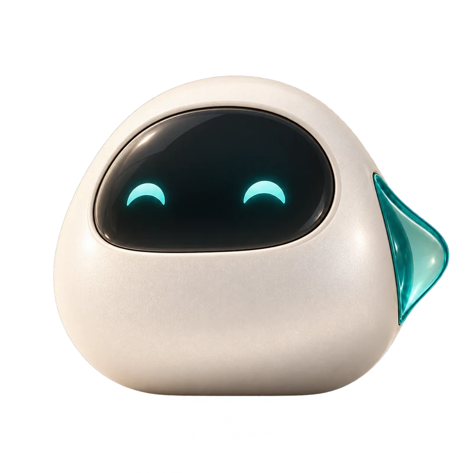

Saúde e cuidado
Informações administrativas, recepção e jornadas de agendamento para clínicas e redes de saúde.
Seu negócio tem um jeito próprio de cuidar das pessoas. A sua tecnologia também pode ter.
Agentes de atendimento, sites e sistemas pensados para conectar conversas, simplificar rotinas e aproximar sua empresa de quem importa.

Da primeira dúvida ao próximo passo, imagine um atendimento que conhece o contexto do seu negócio.
Demonstração guiada com dados fictícios.
Informações administrativas, recepção e jornadas de agendamento para clínicas e redes de saúde.
Uma presença digital que recebe, apresenta e facilita o próximo contato.
Sites, sistemas e integrações desenhados a partir da sua operação.
Uma vitrine para apresentar sua empresa. Uma experiência para iniciar conversas. Um site pensado junto com o seu negócio.
Conte qual rotina você quer transformar.